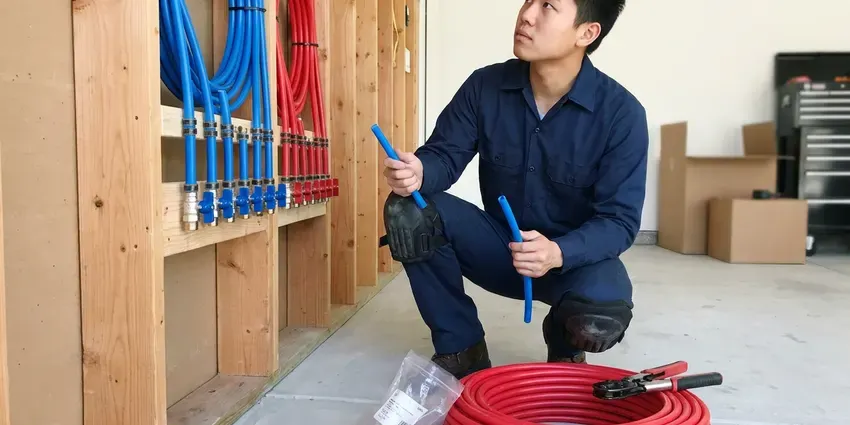

Sewage Ejector Pump Installation in Jackson, WY
Smell of sewage near the pit? JKV Plumbing diagnoses and replaces ejector pumps across Jackson, WY.
- Tidy Basement When Done
- Permit Handled
- Tested Before We Leave
- Licensed Wyoming Plumbers

Pump Trouble in Jackson, WY?
Permit, basin, vent and alarm are all on us.
Ejector Pump Installation in Jackson, WY From JKV Plumbing
JKV Plumbing installs sewage ejector pumps in Jackson, WY for any toilet, shower or sink that sits below the main sewer line, where gravity simply cannot move waste out of the house. Everything drains to a sealed pit. A float kicks the pump on as the level rises, sending waste up a two-inch line to the main drain. Then it shuts off.
Some of what we do:
- Grinder pump systems for pressure sewer and long runs
- Pit sizing and roof venting for new systems
- High water alarms, audible or Wi-Fi

Additional Plumbing Installation Services in Jackson, WY
We install water heaters, pumps, lines, and fixtures across Jackson, WY with careful, permitted work that passes inspection the first time.


Customers
Why Choose JKV Plumbing for Sewage Ejector Pump Installation in Jackson, WY?
Every pump gets sized for the job rather than picked off a shelf. Sized right, the pump starts less often, the switch and motor wear slower, and it can run its full 7 to 10 years without failing on a holiday. Short cycling kills pumps.
- Local Crews, Crews know what local inspectors check and plan for them.
- Solids Rated, Pumps rated for two-inch solids on sewage applications.
- Alarm Protection, A high water alarm sounds before waste reaches the floor.
Citywide Coverage
Wherever your property sits in Jackson, high on a slope or below the street sewer, we can design an ejector system that works. We also service homes on septic, where the ejector discharge ties into the building drain upstream of the tank so the septic system handles the waste the same way it handles everything else. We protect the tank.
Experienced Team
Our team reads the pump curve, not a rule of thumb. Lift, run length, fittings and discharge size all change a pump's output, and a pump chosen without that math tends to short-cycle or strain. We do the numbers.
Safety-First Approach
Our crews follow Wyoming plumbing code on all ejector work, plus each manufacturer's installation rules. Code is the floor, and makers add rules on basin size, float clearance and discharge size, so we follow both to keep the system safe and covered. We meet both.
Trusted Certified Jackson Plumbing Services Professionals
At JKV Plumbing, we are proud to offer certified plumbing services throughout Jackson, WY. Those papers on the wall mean something. Our plumbers hold recognized industry credentials, and they follow strict safety and quality rules on every repair, installation and maintenance call we run.
Call Us Now PHCC Plumbing Contractor Recognition
PHCC Plumbing Contractor Recognition Better Business Bureau (BBB) Accreditation
Better Business Bureau (BBB) Accreditation Angi Certified Pro
Angi Certified Pro ISO 9001 Quality Management Certification
ISO 9001 Quality Management CertificationWhat Goes Into an Ejector System in Jackson, WY
Emergency Sewage Ejector Pump Replacement in Jackson
An ejector failure often starts with the high water alarm, followed by slow drains and a smell near the pit. Shut off water to the basement fixtures, keep everyone from flushing below grade, and call us, since most emergency pump replacements are done in a few hours once the plumber is on site. We carry common pumps.

New Construction Sewage Ejector Pump Installation in Jackson, WY
On a new build, we set the basin ahead of the slab pour. With no concrete to cut, it costs the least then, and we stub drains, vent and discharge to the plans for a clean rough-in inspection. It keeps the pour on schedule.
Ejector Pump Installation Cost Comparison in Jackson, WY
Replacing a pump in an existing basin costs the least, often done in a few hours. A new system with a basin, slab excavation, venting through the roof, electrical work and an alarm costs more, but it is the only way to add a bathroom below the sewer line in most homes without a macerating unit. Ask for both numbers.
Zoeller Sewage Ejector Pump Installation in Jackson
Zoeller's sewage line runs from light residential to heavy duty, in cast iron with tethered or vertical float switches. We pick the model by horsepower and pump curve for your lift, and a typical basement bathroom lands on a four-tenths or half horsepower unit with two-inch solids handling. Tall lifts need bigger pumps.
Laundry and Wet Bar Ejector Pumps in Jackson, WY
Below-grade laundry rooms and wet bars send gray water down that still needs to be lifted to the sewer. A compact gray water pump handles it, sized for the 15 or more gallons a washer drops at once, with a lint filter to keep fibers off the impeller. Lint kills small pumps.
Cost-Effective Sewage Ejector Pump Upgrades in Jackson, WY
Upgrading an old ejector does not always mean a new basin. If the basin is sound, we can swap in a better pump, replace the old swing check with a new one, add a full-port shutoff and install a high water alarm, which covers most of what a new system offers for a fraction of the cost. We tell you if the basin is done.
Ejector Pump Alarms and Backup Options in Jackson
A high water alarm should be on any ejector basin, since a pump failure can lead to a sewage backup quickly. We install audible alarms with their own power source, or Wi-Fi alarms that text your phone, so you hear about a stuck float while the basin is still filling and not after waste has reached the basement floor. Summer thunderstorms and hail can bring sudden rain and flash flooding, especially in low areas and near drainages. Battery backup is an option.

Sewage Ejector Pump Basin & Pit Installation in Jackson
Digging the pit starts with a saw cut through the floor, deep enough to set the basin flush with the finished floor. Basements and crawlspaces are both common in Wyoming homes, and both benefit from protection from freezing and groundwater. We bed the basin on gravel and backfill around it so it cannot float when groundwater rises, then pour new concrete to seal the floor and lock the basin in place. A floating basin breaks pipe.
Sewage Ejector Pump Installation Near Me in Jackson, WY
Typing sewage ejector pump installation near me into a phone gets you a lot of names. Ask each one whether the basin is vented through the roof, whether the quote includes a check valve and shutoff, and whether an alarm is part of the price, because those answers tell you more than a star rating. Our answer is yes to all three.
Our plumbers know how permits usually go in Jackson, WY, which keeps new ejector systems on schedule. New basins need a rough-in inspection with the vent and drains exposed, so we time the concrete patch around the inspector's visit rather than pouring early and cutting it back open. It saves a day.
JKV Plumbing at a Glance
- Licensed and insured plumbers serving Jackson, WY
- Same-day appointments and 24/7 emergency response
- Clear written estimates, no hidden fees
- 4.9-star rated by 782+ Wyoming customers
Jackson Map
Jackson Information
- Population
- 10,639
- Area codes
- Local
- Service area
- Jackson and towns within a 40 mile drive
- Nearby
- Lander, Cody, Riverton, Powell
Any toilet, shower or sink that sits below the sewer line needs a sealed basin and an ejector pump to lift waste up and out of your Jackson, WY home.
Talk to a Plumber
Reach out to JKV Plumbing for reliable plumbing work done by licensed pros in Jackson, WY.
Our Specialized Plumbing Services in Jackson, WY
At JKV Plumbing, you get every kind of plumbing service from one company across Jackson, WY. From leak detection to full system installs, our team works fast and charges fair prices on homes and commercial properties alike. Here are the core services we offer:


How an Ejector Install Runs in Jackson, WY
What happens from the phone call to the last test cycle on your ejector job.
Request a Quote
Call (307) 393-4049 or fill out our form to set up a visit. We will ask a few questions first.
Assessment
In your Jackson home, a plumber measures the lift and run and maps the vent. The basin location gets picked.
Installation
The floor is opened if needed and the basin and pump go in. Each joint gets sealed and checked.
Frequently Asked Questions About Sewage Ejector Pump Installation in Jackson
Many Jackson, WY installs run $2,500 to $6,000, depending on pump type, basin size and floor work. Grinders and duplex setups cost more, and those items get their own lines on the quote so the money is easy to follow. Every price is in writing.
Liberty and Zoeller, for the most part. We choose the model from your lift and pipe run.
Many residential jobs can, especially replacements. New systems with slab cutting often run into a second day, plus the patch after inspection.
We advise against it. It combines plumbing, wiring, venting and usually concrete, and getting one wrong can mean sewer gas, a backup or a failed inspection. Permits usually require a pro.
Zoeller, Liberty, Wayne and Grundfos are all on our list. We go over power, solids handling and warranty with you.
Strange noises from the pit, frequent cycling, slow basement drains and odors. Repeated alarms within a few months usually mean the pump is nearly done.
We warranty our labor in writing, and the pump carries the manufacturer's warranty. The exact terms come with your estimate.
A well-kept pump usually lasts 7 to 10 years, and better units can go longer. Run frequency and what gets flushed decide most of it.
Hear From Customers Who Hired Our Plumbing Experts

Marcus H.
Grease from the fryer line kept clogging the kitchen drain at my diner. JKV Plumbing hydro jetted the line after closing, showed me the buildup on camera, and set us up on a quarterly cleaning so it does not catch us on a Friday again.
Drain Cleaning · Green River, WY
Laura S.
Our 40 gallon tank started leaking from the bottom after thirteen years. The tech hauled the old one out, set a new unit with a fresh expansion tank, and had hot water running in about four hours. He took the old tank with him too.
Water Heater Replacement · Green River, WYMonica A.
Our water bill nearly doubled in one month with no change in how we used water. The tech checked the meter, heard the leak under the hallway with his equipment, and opened a hole about a foot square. Fixed the same day.
Slab Leak Repair · Riverton, WY
Nathan E.
Our tankless heater kept throwing an error code and shutting off mid shower. The tech flushed the heat exchanger, which was full of scale, and replaced a bad flow sensor. Hot water has been steady for half a year now.
Water Heater Repair · Riverton, WY
Lisa C.
Water was pouring out from under the washing machine on a holiday weekend. JKV Plumbing talked me through closing the valves over the phone and had a plumber at the house within ninety minutes. It was a burst fill hose.
Emergency Plumbing · Powell, WY
Diane F.
My kitchen faucet had dripped for months and I finally got tired of hearing it at night. JKV Plumbing came out the next morning, replaced the cartridge and the O rings, and tightened a loose base that was letting water under the sink.
Faucet Repair · Powell, WY